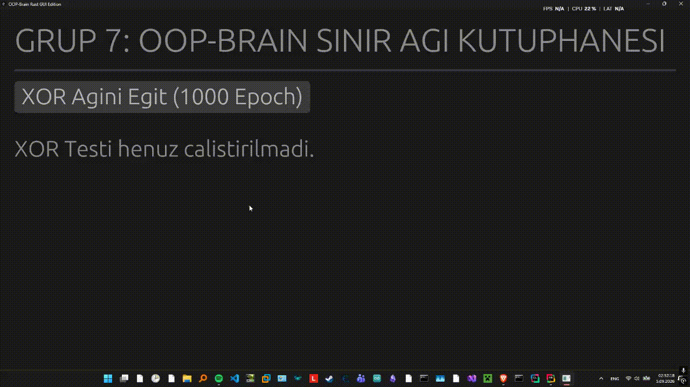
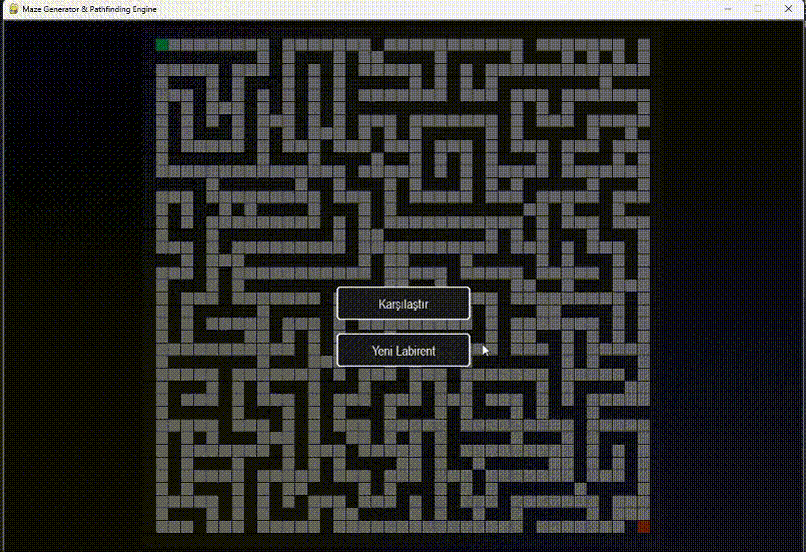

[ ML Engineer / Low-Level Software Architect ]
I'm an AI & ML engineering student on the ML track with a parallel career as a low-level systems architect. I combine low-level software with deep engineering to build AI systems.
I'm an AI & ML engineering student on the ML track with a parallel career as a low-level systems architect. I combine low-level software with deep engineering to build AI systems.

Machine learning classification model built using the 2024 CDC BRFSS dataset. Includes data preprocessing and exploratory data analysis.

A custom open-source neural network library written in C++ from scratch. Features matrix math operations, layer architectures, and forward-pass integration routines.

OOP-Brain is a robust, from-scratch feedforward neural network and matrix computation engine originally developed in C++ and systematically re-engineered into memory-safe Rust with an integrated graphical user interface.

Pathfinding Algorithms Visualised Benchmark